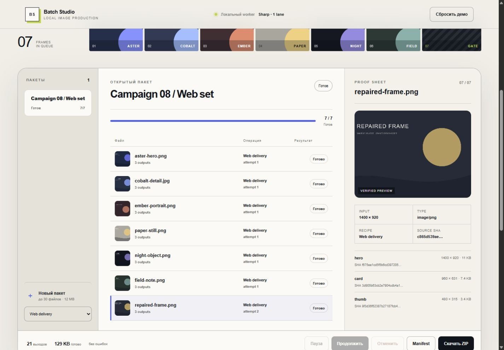

три размера на исходник
LOCAL IMAGE PRODUCTION
7 исходников.
7 исходников.
21 проверенный выход.
Очередь готовит изображения для сайта, не теряя проблемные файлы и не меняя оригиналы.
Разобрать рабочий цикл- Роль
- Product · Backend · UX
- Стек
- Node.js · Sharp · ZIP
- Проверка
- 16 tests · real output

01QUEUE02RUN03ISSUE04RETRY05PASS